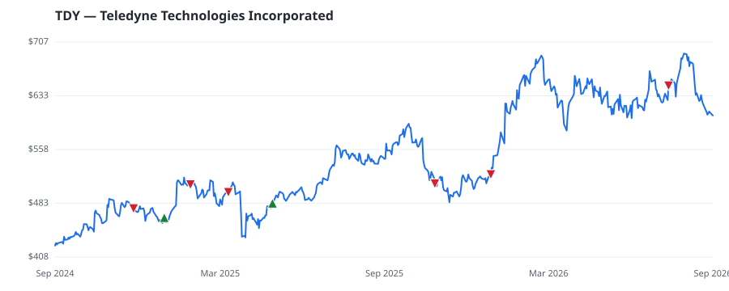

bullish · bearish · n/a — dots: price>SMA10 · SMA10>SMA50 · SMA50>SMA200 · up>down volume (20d)
Technology Hardware · large cap · ★ 1 buyer(s) sit on a committee that regulates this industry
Members who bought TDY earned a dollar-weighted +18.0% from their disclosure dates, versus +19.2% for the S&P 500 over the same holding windows (-1.2% alpha).

▲ green = a disclosed purchase · ▼ red = a disclosed sale (plotted on disclosure date)
Teledyne Technologies Inc provides enabling technologies to sense, analyze and distribute information for industrial growth markets that require advanced technology and high reliability. The firm operates in four segments: Digital Imaging, Instrumentation, Aerospace and Defense Electronics, and Engineered Systems. The Digital Imaging segment, that derives maximum revenue, includes high-performance sensors, cameras and systems, within the visible, infrared and X-ray spectra for use in industrial, government and medical applications, as well as MEMS and high-performance, high-reliability semicon SEARCH, DETECTION, NAVIGATION, GUIDANCE, AERONAUTICAL SYS · website
| Revenue | $6.1B | Net income | $895.7M |
|---|---|---|---|
| Operating income | $1.1B | Diluted EPS | $18.88 |
| Assets | $15.3B | Equity | $10.5B |
| Member | Chamber | Out-performer | Disclosed buys $ | Return on buys |
|---|---|---|---|---|
| Rob Bresnahan | house | — | $8K | +25.6% |
| Rohit Khanna ★ | house | — | $8K | +10.4% |
Disclosed $ figures are bracket midpoints — filings report ranges (e.g. $1,001–$15,000), not exact amounts.
🛒 Newly buying: Nearwater Capital Markets, Ltd (+12%, 0.3% of book) · Militia Capital Partners, LP (+6%, 0.1% of book)
| Fund | Fund alpha vs SPY | Position | % of book |
|---|---|---|---|
| BRAUN STACEY ASSOCIATES INC | +6% | $24M | 0.7% |
| Nearwater Capital Markets, Ltd | +12% | $17M | 0.3% |
| Candelo Capital Management LP | +20% | $9M | 6.7% |
| Fogel Capital Management, Inc. | +11% | $5M | 2.2% |
| VALICENTI ADVISORY SERVICES INC | +9% | $5M | 0.9% |
| Old West Investment Management, LLC | +44% | $3M | 0.3% |
| Militia Capital Partners, LP | +6% | $0M | 0.1% |
| CCG WEALTH MANAGEMENT, LLC | +4% | $0M | 0.1% |
Hedge data: SEC EDGAR 13F · ranked funds beat SPY in >50% of their quarters · fund alpha = mirror-portfolio return minus SPY.